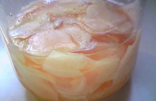
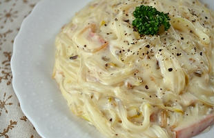
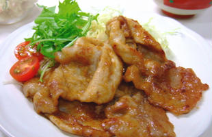
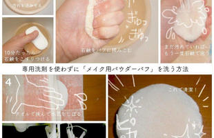
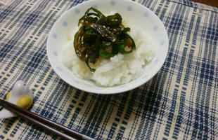
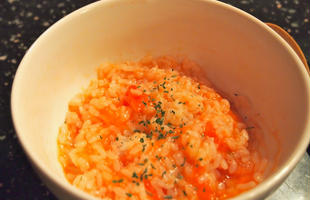

今一番ホットなライフレシピ
数時間のうちにたくさん見られたレシピです
-
 27人がみています 料理
レンジで簡単！ 自家製「ガリ」の作り方
自家製「ガリ」は一度作ったらもう市販のは食べられなくなるほど美味しいぞ！新生姜＋酢＋砂糖＋塩だけで作れて自分好みの甘酸っぱさに簡単調節。新しょうがはハウス栽培が5月頃、露地栽培は11月頃が旬だよ。
-

75人がみています
料理
ほおばる幸せ！純喫茶風「ボリュームたまごサンド」の作り方
純喫茶でレトロカップを傾けるタイプの厚焼きたまごサンドは、たまご焼きが下手でも熱いうちにラップに包めばきれいに固まるので大丈夫。問題はかぶりつくとほっぺたパンパン美味しさじゅわぁ...で満面の笑みになっちゃうことだ。怖いおじさんでもだ。
-

14人がみています
料理
ボリューム満点！豚のにんにくみそ焼きの作り方
心の底から満足させてくれる肉のおかず。豚肉を焼き【みそ＋醤油＋みりん＋砂糖＋おろしニンニク＋水】をからめ、ご飯にのっけなさい…豚のあまい脂にニンニクと味噌の芳ばしさがしみこみ、ご飯の上でとろけます。これが極楽か…。...で満面の笑みになっちゃうことだ。怖いおじさんでもだ。
-

16人がみています
暮らし
専用道具は使わない！メイク用パウダーパフのお手入れ方法
皮脂を吸い込んだメイク道具には雑菌がいっぱい！専用洗剤を使わなくてもいいので、こまめに洗って清潔にしてね。石鹸だと多少コスメの色が残ったりしますが、バイキンは洗い流せます。最初に10分ほどぬるま湯につけておくのがポイント！…豚のあまい脂にニンニクと味噌の芳ばしさがしみこみ、ご飯の上でとろけます。これが極楽か…。...で満面の笑みになっちゃうことだ。怖いおじさんでもだ。
-

18人がみています
料理
ピーマン嫌いも大丈夫！ご飯にぴったりのピーマン佃煮の作り方
巷には無限ピーマンって名レシピがあるけど、ピーマンの苦味はタテに切ると出にくく油で炒めると和らぐ。甘辛く炒めるとご飯に合いすぎて、どっちがお供かわからんほど食べられるのでピーマンしかないときは佃煮やってみて！…豚のあまい脂にニンニクと味噌の芳ばしさがしみこみ、ご飯の上でとろけます。これが極楽か…。...で満面の笑みになっちゃうことだ。怖いおじさんでもだ。
-

16人がみています
料理
【超絶簡単】包丁もお鍋も使わない！トマトリゾットの作り方
なんだか熱っぽい…寝ていたいけど薬飲むから何か食べなきゃ…。そんなときは冷やご飯on丸ごとトマトon塩を電子レンジでチン！これだけでトマトリゾットが完成だよ…やさしすぎる。「助かるなぁ」って気持ちだけでも心がずいぶん休まるね。…豚のあまい脂にニンニクと味噌の芳ばしさがしみこみ、ご飯の上でとろけます。これが極楽か…。...で満面の笑みになっちゃうことだ。怖いおじさんでもだ。